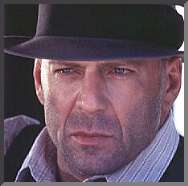

Contents | Features | Reviews | News | Archives | Store |
 |
|
| Movie Credits | Buy It! |
Last Man Standing
Review by Carrie Gorringe
|  | Written and Directed by Walter Hill. Based on the screenplay for
"Yojimbo" by Starring Bruce Willis, |
Of all of the names listed above, the most relevant one for our purposes is not Walter Hill’s, but that of Akira Kurosawa, and is so only because of the exponential difference in the product that stems from the same source. Kurosawa is one of only a handful -- perhaps two handsful -- of directors that belong to a realm of talent so rare in occurrence and so exquisite in manifestation that they have been and are the justification for classifying film as an art form, regardless of the mediocrities and/or excrescenes of the majority of directors. And his influence has been profound. From John Sturges’ adaptation of The Seven Samurai (1954) into The Magnificent Seven (1960), to George Lucas’s borrowing of elements from The Hidden Fortress (1958) for Star Wars (1977) to a narrative structure that utilizes multiple points-of-view to analyze how an event unfolded (shades of 1950’s Rashomon), many filmmakers owe Kurosawa a tremendous debt for demonstrating how on-screen storytelling should take place.
Kurosawa never shrank from depicting the arbitrariness and cruelties that are part of daily existence. What he did with them, however was to make them comprehensible. In a Kurosawa film, wrongdoing or outright evil was established as a benchmark or challenge against which the characters either rose or sank to the occasion; their true characters were revealed for the audience to judge. Kurosawa never made succumbing to evil seem acceptable or glamorous. Indeed, one of his most poignant works is the 1952 film, Ikiru (To Live) is the story of a low-level civil servant who must face the ultimate challenge -- terminal cancer. For a man whose life has been cursed with mediocrity and monotony, the civil servant would seem ill-equipped to cope. Instead, and with no excessive histrionics to vulgarize the situation, Kurosawa displays the development of this man into someone with quiet, but unshakable grace and strength. Through his acceptance of the absurdity of his situation, and his adherence to the values of duty and sacrifice (the central theme in all of Kurosawa’s work), this man will make the final months of his life into much more than all of the years that have come before them, and, in so doing, erase the futility of the former. Even in adapting Macbeth into the setting of Medieval Japan (1957’s Throne of Blood), Kurosawa did not create an inferior version; Shakespeare’s work and themes suffered no diminution in quality for being translated to another place and time.
It’s unfortunate that, given Kurosawa’s respect for other people’s work, writer/director Walter Hill did not see fit to accord Kurosawa a similar courtesy. Hill is best known for films that are all overwrought texture on the surface with very little underneath (Streets of Fire) or better known for the actors appearing in them than for any uniqueness in plot (Eddie Murphy in 48 Hours and Another 48 Hours). And, if the surface flash or the actors can’t cover up the subcutaneous difficulties, then lots of ugly violence works just fine, thank you very much. All three Hillean characteristics are on display in his latest film, Last Man Standing. Hill borrowed the plot for Last Man Standing from the 1961 classic, Yojimbo. Just like the original, Hill offers up his own mysterious stranger, the pseudonymous "John Smith," (Willis) a drifter who’s been, by his own voice-over admission, "on the dodge" for much of his life. Arriving in Jericho, Texas, a town in terminal condition because of mob factions -- Irish versus Italian -- who are warring over the right to bring bootleg liquor into a country made thirsty by Prohibition, Smith voluntarily takes up the task of fleecing each group in turn after one of them proceeds to wreck his car. A couple of displays of personal weakness later, "Smith" isn’t sure just whose welfare is at stake.
And "Smith" isn’t the only one suffering under the same assumption. Last Man Standing is engorged with violence without motivation, nastiness for the sake of being nasty. The overall tone resembles the sadistic glee with which a young child might pull wings from a fly. Beat up a couple of whores (among them Powers and Karina Lombard as a reluctant mistress dressed up as a mysterious woman, whose life, it is later revealed, has far less mystery and more mundane sordidness) and grind people’s faces to a pulp, thereby permitting violence junkies to get their fix without knowing that anything is amiss in terms of quality, especially if you cut the action sequences really fast. Under the circumstances, the violence isn’t even cathartic, because the existence of catharsis presupposes some kind of suspense and emotional involvement, neither of which is in any great quantity here. Cinematographer Lloyd Ahern contributes to the track-covering process by shooting the film in a golden haze reminiscent of Lucien Ballard’s work in The Wild Bunch. But false pathos doesn’t work well with ironic detachment; contrary to what anyone connected with this film might have thought, the two don’t complement each other, but merely cancel each other out.
As is typical in a Hill film, the actors salvage what little there is to like about this film. Willis is suitably ironic, as is Dern as the corrupt sheriff. Walken is typically effective in his role of the soft-voiced psycho, even if his voice sounds like it’s coming from the end of a vacuum-cleaner hose. In his role as "Smith’s" sidekick, Joe Friday (Anyone for Dragnet?), Sanderson proves that he’s the successor to the giggly, mentally-unstable young-man role that Michael J. Pollard did so well in Bonnie and Clyde (except that Sanderson won’t get the Oscar for this one -- the charm’s worn a touch thin). In short, I wouldn’t be first in line to see Last Man Standing.
Contents | Features | Reviews | News | Archives | Store
Copyright © 1999 by Nitrate Productions, Inc. All Rights Reserved.